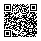

开源 · iPhone / Shadowrocket · v0.3.0 测试版
原文和中文，
一起看 YouTube。
继续使用官方 YouTube App。开启原语言 CC，让已有字幕显示原文和简体中文。
需要你已安装 Shadowrocket（独立付费 App），并能正常播放 YouTube。Android 暂未支持。本项目不提供代理节点。
导入到 Shadowrocket
请用 iPhone Safari 打开。按钮只负责导入模块，证书设置仍需你亲自完成。
按钮没反应？复制地址手动导入
首次设置，三步完成
- 导入模块。点击上方按钮，或复制地址手动添加并启用。
- 设置自己的证书。在 Shadowrocket 当前配置的 HTTPS 解密中生成 CA、安装描述文件；在 iOS「设置 → 通用 → 关于本机 → 证书信任设置」信任自己生成的证书，再开启 HTTPS 解密。Apple 操作说明
- 开启视频 CC。保持 Shadowrocket 连接，回到 YouTube 点 CC，选择原语言字幕。每条新视频都先确认 CC 已打开。
从旧版迁移？请停用旧的「YTB 双语字幕 M0」模块，避免重复处理字幕。
先了解权限，再开启
信任 CA 是设备级权限。模块只增加 www.youtube.com 与 m.youtube.com 两个解密域名；脚本只改写字幕接口，但 HTTPS 解密本身作用于整个域名。不要使用别人提供的证书或私钥。
翻译请求直接发给 YouTube，字幕在手机上合并；没有本项目后台、遥测或 AI API Key。安装下载连接 GitHub。已有配置可能包含其他解密规则，请自行检查。
为什么还是没字幕？
- 完全没字幕：检查 CC；无原字幕的视频暂不支持。
- 只有原文：检查模块、证书信任、HTTPS 解密及脚本下载。翻译失败会保留原文。
- 只有中文：切回原语言，不要选择 YouTube 自带“自动翻译”。
- 仍有问题：到 GitHub 提交视频公开链接及应用版本，不要附 Cookie、代理配置、证书或私钥。
如何卸载？
停用或删除模块即可停止字幕改写。若不再需要 HTTPS 解密，关闭它，并撤销对应 CA 信任、移除描述文件；先确认其他模块没有依赖该证书。
版本和兼容性
使用固定版本脚本，更新需要主动导入新版本。此前已在 iPhone 14 Plus 上验证英文视频；其他语言、横屏、倍速和长期稳定性仍需测试。上游更新可能导致失效。此页不保证所有视频可用。
在电脑上？用手机扫码
